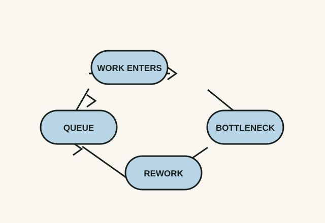

01
Idea one
Events are the surface, not the system
When a pattern keeps recurring, look beyond the latest incident for the relationships and feedback that produce it.
A system is more than its visible parts. Meadows focuses attention on stocks, flows, delays, and feedback loops: the machinery that makes behaviour persist over time. Fixing one event can be useful; changing a recurring pattern normally requires finding the structure that creates it.
Apply it today. If a delivery keeps slipping, map the loop before adding another status meeting. What work enters the queue, what leaves it, and where does rework feed back in?
Watch for. A neat diagram can still miss people, incentives, and outside constraints. Treat it as a hypothesis to test, not the system itself.

0
The reading room
What did this change for you?
Anonymous comments are powered by Cusdis. Add your site ID in
script.jsbefore publishing to activate them.